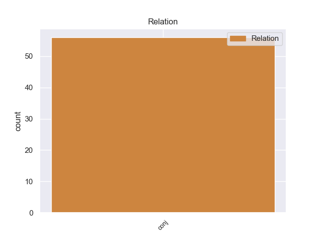
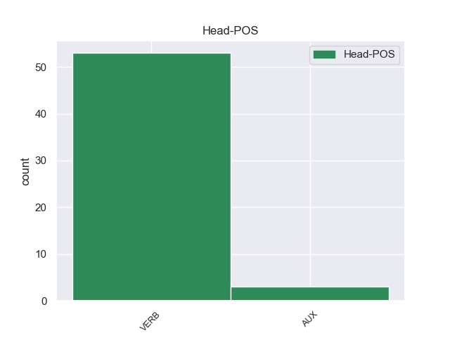
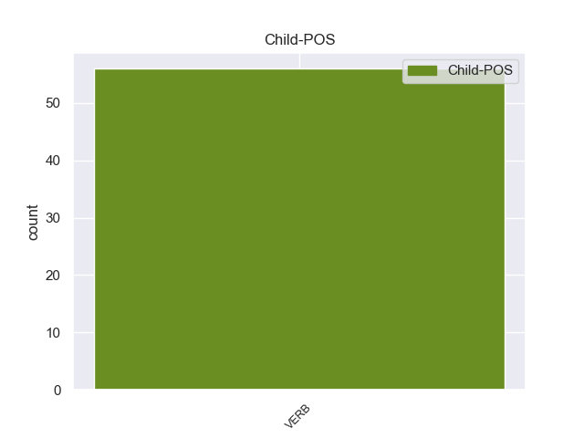

Distribution of features within this leaf



Agreement Rules sorted by frequency.
- When the dependent token is the conjunct(conj) of the head token, and the head token is VERB and the dependent token is VERB.
1 पत्रिका _ _ _ _ 0 _ _ _
2 के _ _ _ _ 0 _ _ _
3 अनुसार _ _ _ _ 0 _ _ _
4 खान _ _ _ _ 0 _ _ _
5 की _ _ _ _ 0 _ _ _
6 इन _ _ _ _ 0 _ _ _
7 यात्राओं _ _ _ _ 0 _ _ _
8 का _ _ _ _ 0 _ _ _
9 उद्देश्य _ _ _ _ 0 _ _ _
10 अभी _ _ _ _ 0 _ _ _
11 तक _ _ _ _ 0 _ _ _
12 स्पष्ट _ _ _ _ 0 _ _ _
13 नहीं _ _ _ _ 0 _ _ _
14 है है VERB VM Mood=Ind|Number=Sing|Person=3|Tense=Pres|VerbForm=Fin|Voice=Act 0 _ _ _
15 , _ _ _ _ 0 _ _ _
16 लेकिन _ _ _ _ 0 _ _ _
17 खुफिया _ _ _ _ 0 _ _ _
18 अधिकारियों _ _ _ _ 0 _ _ _
19 का _ _ _ _ 0 _ _ _
20 मानना _ _ _ _ 0 _ _ _
21 है है VERB VM Mood=Ind|Number=Sing|Person=3|Tense=Pres|VerbForm=Fin|Voice=Act 14 conj _ ChunkId=VGF2|ChunkType=head|Stype=declarative|Tam=hE|Translit=hai|Vib=है
22 कि _ _ _ _ 0 _ _ _
23 सऊदी _ _ _ _ 0 _ _ _
24 अरब _ _ _ _ 0 _ _ _
25 और _ _ _ _ 0 _ _ _
26 मिस्र _ _ _ _ 0 _ _ _
27 परमाणु _ _ _ _ 0 _ _ _
28 तक़नीक _ _ _ _ 0 _ _ _
29 की _ _ _ _ 0 _ _ _
30 तलाश _ _ _ _ 0 _ _ _
31 में _ _ _ _ 0 _ _ _
32 हैं _ _ _ _ 0 _ _ _
33 और _ _ _ _ 0 _ _ _
34 कई _ _ _ _ 0 _ _ _
35 अफ्रीकी _ _ _ _ 0 _ _ _
36 देश _ _ _ _ 0 _ _ _
37 कच्चे _ _ _ _ 0 _ _ _
38 यूरेनियम _ _ _ _ 0 _ _ _
39 संपन्न _ _ _ _ 0 _ _ _
40 हैं _ _ _ _ 0 _ _ _
41 । _ _ _ _ 0 _ _ _
1 क्योंकि _ _ _ _ 0 _ _ _
2 अगर _ _ _ _ 0 _ _ _
3 कांग्रेस _ _ _ _ 0 _ _ _
4 तुरा _ _ _ _ 0 _ _ _
5 से _ _ _ _ 0 _ _ _
6 संगमा _ _ _ _ 0 _ _ _
7 को _ _ _ _ 0 _ _ _
8 समर्थन _ _ _ _ 0 _ _ _
9 नहीं _ _ _ _ 0 _ _ _
10 देती _ _ _ _ 0 _ _ _
11 है _ _ _ _ 0 _ _ _
12 तो _ _ _ _ 0 _ _ _
13 पवार _ _ _ _ 0 _ _ _
14 इस _ _ _ _ 0 _ _ _
15 बात _ _ _ _ 0 _ _ _
16 को _ _ _ _ 0 _ _ _
17 सहयोगी _ _ _ _ 0 _ _ _
18 दलों _ _ _ _ 0 _ _ _
19 के _ _ _ _ 0 _ _ _
20 बीच _ _ _ _ 0 _ _ _
21 ले _ _ _ _ 0 _ _ _
22 जाएंगे जा AUX VAUX Gender=Masc|Mood=Ind|Number=Sing|Person=3|Polite=Form|Tense=Fut|VerbForm=Fin 0 _ _ _
23 और _ _ _ _ 0 _ _ _
24 इसका _ _ _ _ 0 _ _ _
25 सीधा _ _ _ _ 0 _ _ _
26 फायदा _ _ _ _ 0 _ _ _
27 एनसीपी _ _ _ _ 0 _ _ _
28 को _ _ _ _ 0 _ _ _
29 होगा हो VERB VM Gender=Masc|Mood=Ind|Number=Sing|Person=3|Tense=Fut|VerbForm=Fin|Voice=Act 22 conj _ ChunkId=VGF3|ChunkType=head|Stype=declarative|Tam=gA|Translit=hogā|Vib=गा
30 । _ _ _ _ 0 _ _ _
Disagree Examples:
1 सूत्रों _ _ _ _ 0 _ _ _
2 के _ _ _ _ 0 _ _ _
3 अनुसार _ _ _ _ 0 _ _ _
4 माओवादियों _ _ _ _ 0 _ _ _
5 ने _ _ _ _ 0 _ _ _
6 राज्य _ _ _ _ 0 _ _ _
7 में _ _ _ _ 0 _ _ _
8 विभिन्न _ _ _ _ 0 _ _ _
9 चरणों _ _ _ _ 0 _ _ _
10 में _ _ _ _ 0 _ _ _
11 पंचायत _ _ _ _ 0 _ _ _
12 चुनाव _ _ _ _ 0 _ _ _
13 कराने _ _ _ _ 0 _ _ _
14 का _ _ _ _ 0 _ _ _
15 निर्णय _ _ _ _ 0 _ _ _
16 लिया _ _ _ _ 0 _ _ _
17 है है AUX VAUX Mood=Ind|Number=Sing|Person=3|Tense=Pres|VerbForm=Fin 0 _ _ _
18 , _ _ _ _ 0 _ _ _
19 लेकिन _ _ _ _ 0 _ _ _
20 यह _ _ _ _ 0 _ _ _
21 केंद्रीय _ _ _ _ 0 _ _ _
22 चुनाव _ _ _ _ 0 _ _ _
23 आयोग _ _ _ _ 0 _ _ _
24 द्वारा _ _ _ _ 0 _ _ _
25 कराए _ _ _ _ 0 _ _ _
26 जाने _ _ _ _ 0 _ _ _
27 वाले _ _ _ _ 0 _ _ _
28 किसी _ _ _ _ 0 _ _ _
29 चुनाव _ _ _ _ 0 _ _ _
30 के _ _ _ _ 0 _ _ _
31 समान _ _ _ _ 0 _ _ _
32 नहीं _ _ _ _ 0 _ _ _
33 होगा हो VERB VM Gender=Masc|Mood=Ind|Number=Sing|Person=3|Tense=Fut|VerbForm=Fin|Voice=Act 17 conj _ ChunkId=VGF2|ChunkType=head|Stype=declarative|Tam=gA|Translit=hogā|Vib=गा
34 । _ _ _ _ 0 _ _ _
1 उन्होंने _ _ _ _ 0 _ _ _
2 कहा _ _ _ _ 0 _ _ _
3 कि _ _ _ _ 0 _ _ _
4 वह _ _ _ _ 0 _ _ _
5 द्विपक्षीय _ _ _ _ 0 _ _ _
6 मसलों _ _ _ _ 0 _ _ _
7 को _ _ _ _ 0 _ _ _
8 सुलझाने _ _ _ _ 0 _ _ _
9 के _ _ _ _ 0 _ _ _
10 लिए _ _ _ _ 0 _ _ _
11 प्रतिबद्ध _ _ _ _ 0 _ _ _
12 हैं है VERB VM Mood=Ind|Number=Sing|Person=3|Polite=Form|Tense=Pres|VerbForm=Fin|Voice=Act 0 _ _ _
13 और _ _ _ _ 0 _ _ _
14 इसके _ _ _ _ 0 _ _ _
15 लिए _ _ _ _ 0 _ _ _
16 प्रयास _ _ _ _ 0 _ _ _
17 करने _ _ _ _ 0 _ _ _
18 से _ _ _ _ 0 _ _ _
19 पीछे _ _ _ _ 0 _ _ _
20 नहीं _ _ _ _ 0 _ _ _
21 हटेंगे हट VERB VM Gender=Masc|Mood=Ind|Number=Sing|Person=3|Polite=Form|Tense=Fut|VerbForm=Fin|Voice=Act 12 conj _ ChunkId=VGF3|ChunkType=head|Stype=declarative|Tam=gA|Translit=haṭeṁge|Vib=गा
22 । _ _ _ _ 0 _ _ _
1 उन्हें _ _ _ _ 0 _ _ _
2 उम्मीद _ _ _ _ 0 _ _ _
3 थी _ _ _ _ 0 _ _ _
4 कि _ _ _ _ 0 _ _ _
5 उन्हें _ _ _ _ 0 _ _ _
6 पेंशन _ _ _ _ 0 _ _ _
7 ज़रूर _ _ _ _ 0 _ _ _
8 मिलेगी मिल VERB VM Gender=Fem|Mood=Ind|Number=Sing|Person=3|Tense=Fut|VerbForm=Fin|Voice=Act 0 _ _ _
9 और _ _ _ _ 0 _ _ _
10 सरकारी _ _ _ _ 0 _ _ _
11 अधिकारी _ _ _ _ 0 _ _ _
12 से _ _ _ _ 0 _ _ _
13 मिलने _ _ _ _ 0 _ _ _
14 के _ _ _ _ 0 _ _ _
15 बाद _ _ _ _ 0 _ _ _
16 वे _ _ _ _ 0 _ _ _
17 काफ़ी _ _ _ _ 0 _ _ _
18 खुश _ _ _ _ 0 _ _ _
19 थीं था VERB VM Gender=Fem|Mood=Ind|Number=Sing|Person=3|Polite=Form|Tense=Past|VerbForm=Fin|Voice=Act 8 conj _ ChunkId=VGF3|ChunkType=head|SpaceAfter=No|Stype=declarative|Tam=WA|Translit=thīṁ|Vib=था
20 . _ _ _ _ 0 _ _ _
1 जबकि _ _ _ _ 0 _ _ _
2 इंफोकॉम _ _ _ _ 0 _ _ _
3 को _ _ _ _ 0 _ _ _
4 अपनी _ _ _ _ 0 _ _ _
5 मेगा _ _ _ _ 0 _ _ _
6 परियोजना _ _ _ _ 0 _ _ _
7 पूरी _ _ _ _ 0 _ _ _
8 होने _ _ _ _ 0 _ _ _
9 के _ _ _ _ 0 _ _ _
10 लिए _ _ _ _ 0 _ _ _
11 अभी _ _ _ _ 0 _ _ _
12 १०००० _ _ _ _ 0 _ _ _
13 करोड़ _ _ _ _ 0 _ _ _
14 रुपये _ _ _ _ 0 _ _ _
15 की _ _ _ _ 0 _ _ _
16 दरकार _ _ _ _ 0 _ _ _
17 है है VERB VM Mood=Ind|Number=Sing|Person=3|Tense=Pres|VerbForm=Fin|Voice=Act 0 _ _ _
18 और _ _ _ _ 0 _ _ _
19 इसके _ _ _ _ 0 _ _ _
20 बाद _ _ _ _ 0 _ _ _
21 ही _ _ _ _ 0 _ _ _
22 यह _ _ _ _ 0 _ _ _
23 कंपनी _ _ _ _ 0 _ _ _
24 प्रमोटर्स _ _ _ _ 0 _ _ _
25 को _ _ _ _ 0 _ _ _
26 लाभ _ _ _ _ 0 _ _ _
27 देना _ _ _ _ 0 _ _ _
28 शुरू _ _ _ _ 0 _ _ _
29 करेगी कर VERB VM Gender=Fem|Mood=Ind|Number=Sing|Person=3|Tense=Fut|VerbForm=Fin|Voice=Act 17 conj _ ChunkId=VGF2|ChunkType=head|Stype=declarative|Tam=gA|Translit=karegī|Vib=गा
30 । _ _ _ _ 0 _ _ _
1 इसके _ _ _ _ 0 _ _ _
2 बाद _ _ _ _ 0 _ _ _
3 हम _ _ _ _ 0 _ _ _
4 ढाका _ _ _ _ 0 _ _ _
5 में _ _ _ _ 0 _ _ _
6 मिलेंगे मिल VERB VM Gender=Masc|Mood=Ind|Number=Plur|Person=1|Tense=Fut|VerbForm=Fin|Voice=Act 0 _ _ _
7 और _ _ _ _ 0 _ _ _
8 हमारे _ _ _ _ 0 _ _ _
9 विदेश _ _ _ _ 0 _ _ _
10 सचिवों _ _ _ _ 0 _ _ _
11 की _ _ _ _ 0 _ _ _
12 मुलाकात _ _ _ _ 0 _ _ _
13 भी _ _ _ _ 0 _ _ _
14 प्रस्तावित _ _ _ _ 0 _ _ _
15 है है VERB VM Mood=Ind|Number=Sing|Person=3|Tense=Pres|VerbForm=Fin|Voice=Act 6 conj _ ChunkId=VGF2|ChunkType=head|Stype=declarative|Tam=hE|Translit=hai|Vib=है
16 । _ _ _ _ 0 _ _ _